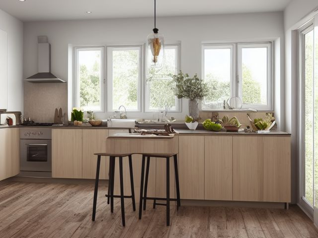

Kitchen micro zone
The Cooking Zone
The step of space either side of the burners where cooking happens with your hands busy and heat already on.
One session: 45-75 min. most of it in Shine, because degreasing the hood and the grates is slow work

What done looks like
Oil, salt, and pepper within one reach of the burners. A utensil crock holding no more than six tools, every one of which you used this month. Pot holders on a hook you can find without looking, the spices you reach for weekly at the front of the rack, and a clear landing space beside the hob wide enough to set down a hot pan.
Check these before you start
- Burn or fireOil left heating unattended, and a tea towel or a paper roll stored within reach of a live burner, are the two ways a kitchen fire actually starts.
- Fall, cut, or crushA pan handle turned out over the front edge of the hob is at exactly the height a toddler grabs, and it comes down with the contents.
- Burn or fireA gas burner that clicks without lighting is still releasing gas, and the usual reason is a burner cap knocked out of seat or a port blocked by boiled-over food, both of which happen during exactly the clean this pass asks for. After cleaning, light every burner once and watch for an even blue ring. A lazy yellow flame or a burner that will not catch is a call to a registered engineer, not a thing to adjust.
The six passes, in order
Work them in this order. Sorting after you have arranged things means arranging things you were about to remove.
Sort
Decide what stays. Everything else leaves the zone now.
Empty the utensil crock into a box and cook for a week, returning to the crock only what your hand actually reaches for. The warped plastic turner, the corn holders, and the third pair of tongs are still in the box at the end of the week, which is your answer.
Straighten
Give what stays a home, placed where the hand actually reaches.
Arrange by the moment of need, not by shape. Oil, salt, and the turner within one reach of the burner, spices in a shallow drawer or tiered rack where you read the lids from above rather than shuffling jars, pans stored on the side you plate from.
Shine
Clean it, and use the cleaning to inspect what you cannot see when it is full.
Lift the burner grates off and soak them while you wash the splash wall and the underside of the hood with dish soap. Take the hood filter out and run it through hot soapy water, because a saturated filter stops pulling steam and starts dripping it back down.
Safety
Make the zone safe for everybody who uses it, including the shortest person.
Turn every pan handle inward so it cannot catch a sleeve or a small hand reaching up. Keep the tea towel, the paper roll, and the oil bottle off the burner side of the hob, and know where the fire blanket or extinguisher is before a pan is smoking. If the hob burns gas, three things belong in this pass. Know where the shutoff valve is before you need it, usually behind or beneath the appliance. Check that each burner actually lights rather than clicking unlit, because a burner left running unlit fills a room quietly. And if you ever smell gas, do not touch a light switch or anything electrical, open a window, leave, and call the emergency number on your supplier's bill from outside. Repairs and fittings are a licensed job, always.
Standardize
Write down the best way you know today, so it survives you forgetting.
Photograph the hob and one step of surround in its ready state and tape the photo inside the nearest cabinet door, so ready is a picture anyone can match rather than a standard only you hold.
Sustain
Attach the reset to something that already happens, so it keeps itself.
While the pan heats, the spice you just used goes back to the front of the rack and any utensil on the counter goes back in the crock.
The spice rack you are not honest about
Every cook keeps jars bought for one recipe from one holiday. Open them and smell them, one by one, over the bin. Ground spices fade first, and if a jar smells of dust rather than of itself, it is no longer seasoning anything you cook, and keeping it does not recover what you paid. Then make the harder call underneath: keep spices for the food you cooked in the last year, not the food you imagine cooking. If you want that cuisine back, buy the two spices fresh on the day you cook it. A rack you can read is worth more than a rack that is complete.
Cleaning it properly
Grease is the whole job here, and it hides upward. Get the burner grates soaking first so they clean themselves while you tackle the wall and the hood, and remember the hood filter, because a saturated one stops pulling steam and starts dripping it back at you.
Inspect as you clean. Cleaning is the only time you see the zone empty, so use it.
- A hood filter so grease-soaked it stays soft and drips, and a fan behind it that sounds strained or barely moves air.
- A burner that lights slow, burns yellow and sooty, or a grate that rocks on its seat.
- Scorching, discoloring, or bubbling paint on the splash wall or the hood underside where heat is building.
- A chip, a crack, or a spidered line in the hob surface or its enamel, found once the baked-on ring is cleared.
- A frayed or heat-stiffened cord on any appliance parked on the burner side of the counter.
The standard that keeps it fixed
Oil, salt, and your turner within one reach of the burner, no more than six tools in the crock, handles turned in, and a clear landing space beside the hob at all times.
Reset trigger. Every time you put a pan on to heat.
Next in this room
- The Primary Prep Counter, the zone before this one
- The Sink and Dishwashing Zone, the zone after this one
- All 7 micro zones in the Kitchen
Related reading
- What is 6S?
- This zone's safety pass, in full
- Is one spot in this zone always the one you skip?
- Why this zone gets messy again
- Decluttering vs. organizing
- Before you buy storage for this zone
- Still does not fit, even after the honest count?
- Does something in this zone actually get used somewhere else?
- Stuck on one item in this zone?
- Written the standard, but nobody else follows it?
- Does everyone in the house agree what "done" looks like here?
- Does more than one person use this zone?
- Found a duplicate of something in this zone?
- Why the standard above names one home per category
- Is the everyday item in this zone actually the easy one to reach?
- Not sure whether to keep something in this zone?
- Does this zone keep running out of something?
- Started this zone and stalled partway through?
When you want it off the screen
Carry The Cooking Zone into the room
The method above is complete and free. The Whole House Print Pack puts The Cooking Zone and the other 113 micro zones on 684 printable cards, so the steps you just read are not stuck behind a phone screen while your hands are full.
The Print Pack, 19 dollarsJust this zone, 4 dollarsOr draw a card free
The Cooking Zone on its own is 4 dollars for 6 cards. All 114 micro zones is 19 dollars for 684. The whole house is the better buy; the single zone is here so you can take only what you are working on.
If The Cooking Zone keeps fighting back, the real problem usually sits somewhere else in the room. A one hour virtual consult is 250 dollars: we find the function, the friction and the root cause together, and you keep a written standard for the space. See what a consult covers.